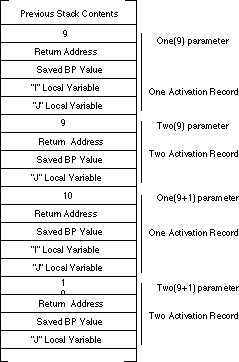

| Table of Content | Chapter Twelve (Part 2) |
|
| Table of Content | Chapter Twelve (Part 2) |
|
| CHAPTER
TWELVE: PROCEDURES: ADVANCED TOPICS (Part 1) |
||
| 12.0 -
Chapter Overview 12.1 - Lexical Nesting, Static Links, and Displays 12.1.1 - Scope 12.1.2 - Unit Activation, Address Binding, and Variable Lifetime 12.1.3 - Static Links 12.1.4 - Accessing Non-Local Variables Using Static Links 12.1.5 - The Display 12.1.6 - The 80286 ENTER and LEAVE Instructions 12.2 - Passing Variables at Different Lex Levels as Parameters. 12.2.1 - Passing Parameters by Value in a Block Structured Language 12.2.2 - Passing Parameters by Reference, Result, and Value-Result in a Block Structured Language 12.2.3 - Passing Parameters by Name and Lazy-Evaluation in a Block Structured Language 12.3 - Passing Parameters as Parameters to Another Procedure 12.3.1 - Passing Reference Parameters to Other Procedures 12.3.2 - Passing Value-Result and Result Parameters as Parameters 12.3.3 - Passing Name Parameters to Other Procedures 12.3.4 - Passing Lazy Evaluation Parameters as Parameters 12.3.5 - Parameter Passing Summary 12.4 - Passing Procedures as Parameters 12.5 - Iterators 12.5.1 - Implementing Iterators Using In-Line Expansion 12.5.2 - Implementing Iterators with Resume Frames 12.6 - Sample Programs 12.6.1 - An Example of an Iterator 12.6.2 - Another Iterator Example |
Copyright 1996 by Randall Hyde
All rights reserved. Duplication other than for immediate display through a browser is prohibited by U.S. Copyright Law. This material is provided on-line as a beta-test of this text. It is for the personal use of the reader only. If you are interested in using this material as part of a course, please contact rhyde@cs.ucr.edu Supporting software and other materials are available via anonymous ftp from ftp.cs.ucr.edu. See the "/pub/pc/ibmpcdir" directory for details. You may also download the material from "Randall Hyde's Assembly Language Page" at URL: http://webster.ucr.edu Notes: This document does not contain the laboratory exercises, programming assignments, exercises, or chapter summary. These portions were omitted for several reasons: either they wouldn't format properly, they contained hyperlinks that were too much work to resolve, they were under constant revision, or they were not included for security reasons. Such omission should have very little impact on the reader interested in learning this material or evaluating this document. This document was prepared using Harlequin's Web Maker 2.2 and Quadralay's Webworks Publisher. Since HTML does not support the rich formatting options available in Framemaker, this document is only an approximation of the actual chapter from the textbook. If you are absolutely dying to get your hands on a version other than HTML, you might consider having the UCR Printing a Reprographics Department run you off a copy on their Xerox machines. For details, please read the following EMAIL message I received from the Printing and Reprographics Department:
We are currently working on ways to publish this text in a form other than HTML (e.g., Postscript, PDF, Frameviewer, hard copy, etc.). This, however, is a low-priority project. Please do not contact Randall Hyde concerning this effort. When something happens, an announcement will appear on "Randall Hyde's Assembly Language Page." Please visit this WEB site at http://webster.ucr.edu for the latest scoop. Redesigned 10/2000 with "MS FrontPage 98" using
17" monitor 1024x768 |
|
The last chapter described how to create procedures, pass parameters, and allocate and access local variables. This chapter picks up where that one left off and describes how to access non-local variables in other procedures, pass procedures as parameters, and implement some user-defined control structures.
This chapter completes the discussion of procedures, parameters, and local variables begun in the previous chapter. This chapter describes how block structured languages like Pascal, Modula-2, Algol, and Ada access local and non-local variables. This chapter also describes how to implement a user-defined control structure, the iterator. Most of the material in this chapter is of interest to compiler writers and those who want to learn how compilers generate code for certain types of program constructs. Few pure assembly language programs will use the techniques this chapter describes. Therefore, none of the material in this chapter is particularly important to those who are just learning assembly language. However, if you are going to write a compiler, or you want to learn how compilers generate code so you can write efficient HLL programs, you will want to learn the material in this chapter sooner or later.
This chapter begins by discussing the notion of scope and how HLLs like Pascal access variables in nested procedures. The first section discusses the concept of lexical nesting and the use of static links and displays to access non-local variables. Next, this chapter discusses how to pass variables at different lex levels as parameters. The third section discusses how to pass parameters of one procedure as parameters to another procedure. The fourth major topic this chapter covers is passing procedures as parameters. This chapter concludes with a discussion of iterators, a user-defined control structure.
This chapter assumes a familiarity with a block structured language like Pascal or Ada. If your only HLL experience is with a non-block structured language like C, C++, BASIC, or FORTRAN, some of the concepts in this chapter may be completely new and you will have trouble understanding them. Any introductory text on Pascal or Ada will help explain any concept you don't understand that this chapter assumes is a prerequisite.
In block structured languages like Pascal[1] it is possible to nest procedures and functions. Nesting one procedure within another limits the access to the nested procedure; you cannot access the nested procedure from outside the enclosing procedure. Likewise, variables you declare within a procedure are visible inside that procedure and to all procedures nested within that procedure[2]. This is the standard block structured language notion of scope that should be quite familiar to anyone who has written Pascal or Ada programs.
There is a good deal of complexity hidden behind the concept of scope, or lexical nesting, in a block structured language. While accessing a local variable in the current activation record is efficient, accessing global variables in a block structured language can be very inefficient. This section will describe how a HLL like Pascal deals with non-local identifiers and how to access global variables and call non-local procedures and functions.
Scope in most high level languages is a static, or
compile-time concept[3]. Scope is the notion of when a name is
visible, or accessible, within a program. This ability to hide names is useful in a
program because it is often convenient to reuse certain (non-descriptive) names. The
i variable used to control most for loops in high level languages is a
perfect example. Throughout this chapter you've seen equates like xyz_i, xyz_j,
etc. The reason for choosing such names is that MASM doesn't support the same notion of
scoped names as high level languages. Fortunately, MASM 6.x and later does support scoped
names.
By default, MASM 6.x treats statement labels (those with a colon after them) as local to a procedure. That is, you may only reference such labels within the procedure in which they are declared. This is true even if you nest one procedure inside another. Fortunately, there is no good reason why anyone would want to nest procedures in a MASM program.
Having local labels within a procedure is nice. It allows you to reuse statement labels (e.g., loop labels and such) without worrying about name conflicts with other procedures. Sometimes, however, you may want to turn off the scoping of names in a procedure; a good example is when you have a case statement whose jump table appears outside the procedure. If the case statement labels are local to the procedure, they will not be visible outside the procedure and you cannot use them in the case statement jump table. There are two ways you can turn off the scoping of labels in MASM 6.x. The first way is to include the statement in your program:
option noscoped
This will turn off variable scoping from that point forward in your program's source file. You can turn scoping back on with a statement of the form
option scoped
By placing these statements around your procedure you can selectively control scoping.
Another way to control the scoping of individual names is to place a double colon ("::") after a label. This informs the assembler that this particular name should be global to the enclosing procedure.
MASM, like the C programming language, supports three levels of scope: public, global (or static), and local. Local symbols are visible only within the procedure they are defined. Global symbols are accessible throughout a source file, but are not visible in other program modules. Public symbols are visible throughout a program, across modules. MASM uses the following default scoping rules:
Note that these rules apply to MASM 6.x only. Other assemblers and earlier versions of MASM follow different rules.
Overriding the default on the first rule above is easy -
either use the option noscoped statement or use a double colon to make a
label global. You should be aware, though, that you cannot make a local label public using
the public or externdef directives. You must make the symbol
global (using either technique) before you make it public.
Having all procedure names public by default usually isn't much of a problem. However, it might turn out that you want to use the same (local) procedure name in several different modules. If MASM automatically makes such names public, the linker will give you an error because there are multiple public procedures with the same name. You can turn on and off this default action using the following statements:
option proc:private ;procedures are global
option proc:export ;procedures are public
Note that some debuggers only provide symbolic information
if a procedure's name is public. This is why MASM 6.x defaults to public names. This
problem does not exist with CodeView; so you can use whichever default is most convenient.
Of course, if you elect to keep procedure names private (global only), then you will need
to use the public or externdef directive to make desired
procedure names public.
This discussion of local, global, and public symbols
applies mainly to statement and procedure labels. It does not apply to variables you've
declared in your data segment, equates, macros, typedefs, or most other symbols. Such
symbols are always global regardless of where you define them. The only way to make them
public is to specify their names in a public or externdef
directive.
There is a way to declare parameter names and local
variables, allocated on the stack, such that their names are local to a given procedure.
See the proc directive in the MASM reference manual for details.
The scope of a name limits its visibility within a program. That is, a program has access to a variable name only within that name's scope. Outside the scope, the program cannot access that name. Many programming languages, like Pascal and C++, allow you to reuse identifiers if the scopes of those multiple uses do not overlap. As you've seen, MASM provides some minimal scoping features for statement labels. There is, however, another issue related to scope: address binding and variable lifetime. Address binding is the process of associating a memory address with a variable name. Variable lifetime is that portion of a program's execution during which a memory location is bound to a variable. Consider the following Pascal procedures:
procedure One(Entry:integer);
var
i,j:integer;
procedure Two(Parm:integer);
var j:integer;
begin
for j:= 0 to 5 do writeln(i+j);
if Parm < 10 then One(Parm+1);
end;
begin {One}
for i := 1 to 5 do Two(Entry);
end;
The figure below shows the scope of identifiers One,
Two, Entry, i, j, and Parm.

The local variable j in Two masks
the identifier j in procedure One while inside Two.
12.1.2 Unit Activation, Address Binding, and Variable Lifetime
Unit activation is the process of calling a procedure or function. The combination of an activation record and some executing code is considered an instance of a routine. When unit activation occurs a routine binds machine addresses to its local variables. Address binding (for local variables) occurs when the routine adjusts the stack pointer to make room for the local variables. The lifetime of those variables is from that point until the routine destroys the activation record eliminating the local variable storage.
Although scope limits the visibility of a name to a certain section of code and does not allow duplicate names within the same scope, this does not mean that there is only one address bound to a name. It is quite possible to have several addresses bound to the same name at the same time. Consider a recursive procedure call. On each activation the procedure builds a new activation record. Since the previous instance still exists, there are now two activation records on the stack containing local variables for that procedure. As additional recursive activations occur, the system builds more activation records each with an address bound to the same name. To resolve the possible ambiguity (which address do you access when operating on the variable?), the system always manipulates the variable in the most recent activation record.
Note that procedures One and Two
in the previous section are indirectly recursive. That is, they both call routines which,
in turn, call themselves. Assuming the parameter to One is less than 10 on
the initial call, this code will generate multiple activation records (and, therefore,
multiple copies of the local variables) on the stack. For example, were you to issue the
call One(9), the stack would look like the figure below upon first
encountering the end associated with the procedure Two:

As you can see, there are several copies of I
and J on the stack at this point. Procedure Two (the currently
executing routine) would access J in the most recent activation record that
is at the bottom of the figure. The previous instance of Two will only access
the variable J in its activation record when the current instance returns to One
and then back to Two.
The lifetime of a variable's instance is from the point of
activation record creation to the point of activation record destruction. Note that the
first instance of J above (the one at the top of the diagram above) has the
longest lifetime and that the lifetimes of all instances of J overlap.
[1] Note that C and C++ are not block structured languages. Other block structured languages include Algol, Ada, and Modula-2.
[2] Subject, of course, to the limitation that you not reuse the identifier within the nested procedure.
[3] There are languages that support dynamic, or run-time, scope; this text will not consider such languages.
| Table of Content | Chapter Twelve (Part 2) |
|
Chapter Twelve: Procedures: Advanced
Topics (Part 1)
27 SEP 1996